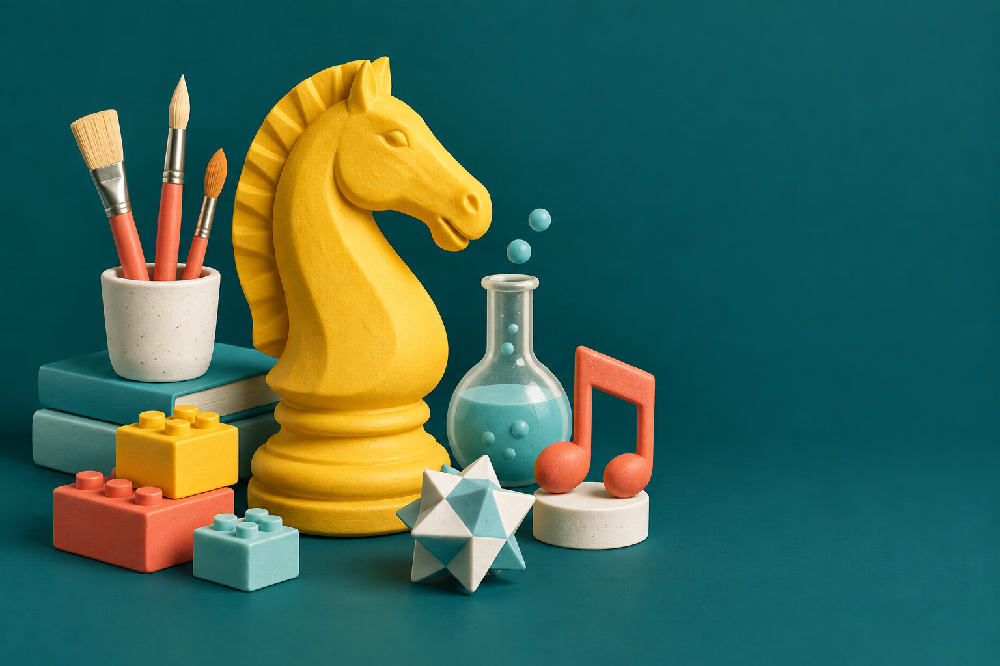

طب أطفال عام
استجابة طبية أولية، فحوصات روتينية وتوجيه مهني للأطفال في كل مرحلة.
للمزيد من التفاصيلمعهد أطفال السحر · شفاعمرو
מכון ילדי הקסםمعهد أطفال السحر
رعاية طبية تبدأ بالإصغاء، إلى جانب عالم متجدّد من الأنشطة والتجارب. مكان للأطفال، للأهل ولكلّ العائلة.
بإدارة د. بسيم نموز، أخصائي طب الأطفال

تعارف، تشخيص ومتابعة
تفكير، إبداع وتجارب مشتركة
مدرّبون، معالجون وأصحاب أفكار
نبدأ بالإصغاء
طب أطفال، إصغاء وتركيز، إرشاد للأهل وأنشطة. اختاروا المجال لنرافقكم بالطريقة المناسبة لكم.
استجابة طبية أولية، فحوصات روتينية وتوجيه مهني للأطفال في كل مرحلة.
للمزيد من التفاصيلتشخيص شامل مع نظرة حساسة ودقيقة لأداء الطفل في البيت وفي الأطر المختلفة.
للمزيد من التفاصيلحوار واضح، مرافقة هادئة وأدوات عملية تدعم العائلة كلها.
للمزيد من التفاصيلمتابعة منظمة للنمو والتطور والاحتياجات الطبية مع مرور الوقت.
للمزيد من التفاصيلخطة واضحة وشخصية للخطوات القادمة مع إجابات دقيقة لأسئلة الأهل.
للمزيد من التفاصيلتواصل واضح، إرشاد مستمر وتوفر للإجابة عن أسئلة واحتياجات العائلة.
للمزيد من التفاصيلمكان للفضول أيضًا
أنشطة للأطفال، الشباب، البالغين وكبار السن، ضمن مجموعات ملائمة.
جميع الأنشطة والتفاصيلنوسّع برامجنا. هذه مجالات قيد التخطيط؛ تُعرض المواعيد والأعمار والأسعار في دليل الأنشطة بعد تأكيدها. يمكن ترك طلب اهتمام.

تفكير للمستقبل واستراتيجيا ولعب.
مهتمّون بالنشاطبناء وتخطيط وحلّ التحدّيات معًا.
مهتمّون بالنشاطألوان ومواد ومساحة للخيال الشخصي.
مهتمّون بالنشاطإيقاع وصوت وحركة في مجموعة.
مهتمّون بالنشاطموهبتكم قد تُلهم الآخرين
معهد أطفال السحر يبحث عن مدرّبي ومدرّبات شطرنج، معالجين ومعالجات، ومقدّمي أنشطة وورشات لجميع الأعمار.
بإدارة د. بسيم نموز، أخصائي طب الأطفال
يقود الدكتور بسيم نموز المعهد من خلال رؤية تجمع بين المهنية الطبية، التعامل الشخصي، ومسار واضح ومحترم لكل طفل وولي أمر.
تعرفوا على الدكتور بسيممساحة ليتعلّم الأهل أيضًا
ورشات مع الدكتور بسيم نموز لفهم اضطراب الإصغاء والتركيز وأسئلة الحياة العائلية. سيُعلَن موعد وسعر اللقاء القادم بعد تأكيدهما.
تفاصيل الورشةالمحادثة القادمة تبدأ هنا
لحجز موعد، للاستفسار عن نشاط أو لاقتراح فعالية، اختاروا طريقة التواصل الأنسب لكم.
شارع توفيق زياد 21، شفاعمرو
للمزيد من التفاصيلتطبيق المعهد
ثبّتوا موقع المعهد كتطبيق للوصول السريع للخدمات والأنشطة وتنسيق المواعيد، بنفس التصميم واللغة.
كيف نضيفه للهاتف؟{kind=link}